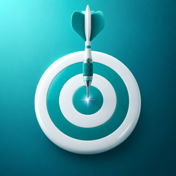

Spot On
5 tiny challenges, 2 minutes · 5 Mini-Aufgaben, 2 Minuten
Perfekter Kreis, blinde Stoppuhr, im Takt bleiben. Wie genau bist du heute? · Draw a perfect circle, stop the clock blind, hit the beat. How precise are you today?
Käufe wiederherstellen · Restore purchases
Öffne die Pro-Seite in der App und tippe auf „Käufe wiederherstellen“. · Open the Pro screen in the app and tap “Restore purchases”.
Abo kündigen · Cancel a subscription
Einstellungen → dein Name → Abonnements → Spot On. Kündige mindestens 24 Stunden vor Ablauf. · Settings → your name → Subscriptions → Spot On. Cancel at least 24 hours before renewal.
Deine Daten · Your data
Es gibt kein Konto. Ergebnisse und Bestwerte liegen auf deinem Gerät. Clubs nutzen die iCloud-Freigabe (CloudKit): Name, Emoji und Tagesergebnis sind für Club-Mitglieder sichtbar. Ranglisten über Game Center. · There is no account. Scores and best results are stored on your device. Clubs use iCloud sharing (CloudKit): your name, emoji and daily score are visible to club members. Leaderboards via Game Center.
Kontakt · Contact
Fragen, Fehler, Ideen: timon.duodu@icloud.com – Antwort meist innert 48 Stunden. · Questions, bugs, ideas – usually answered within 48 hours.